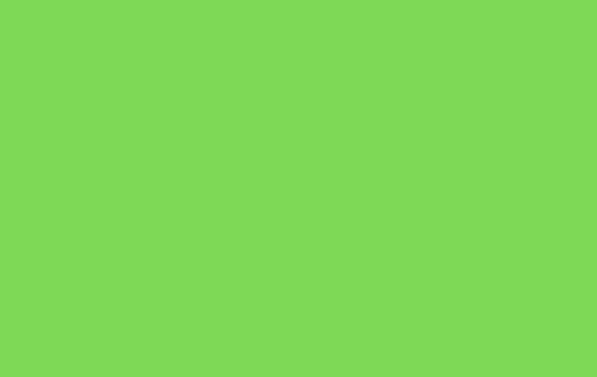
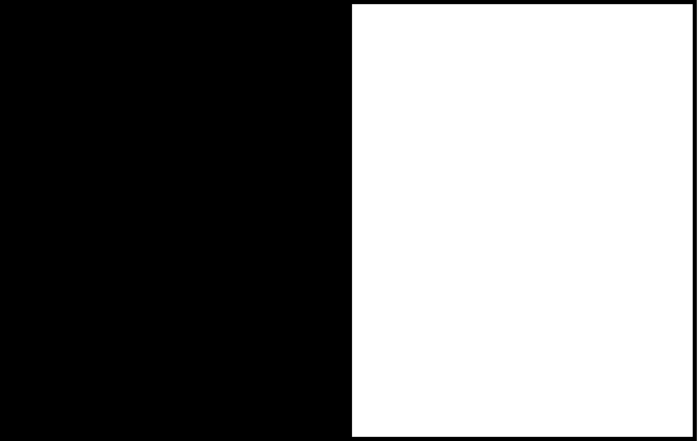
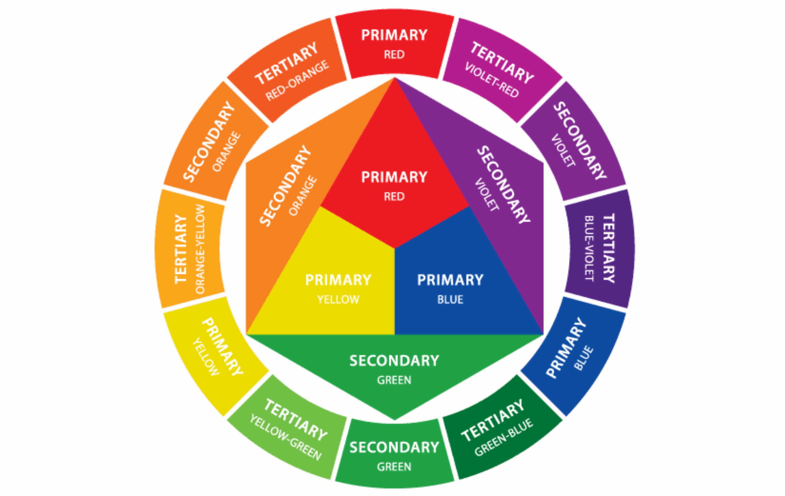
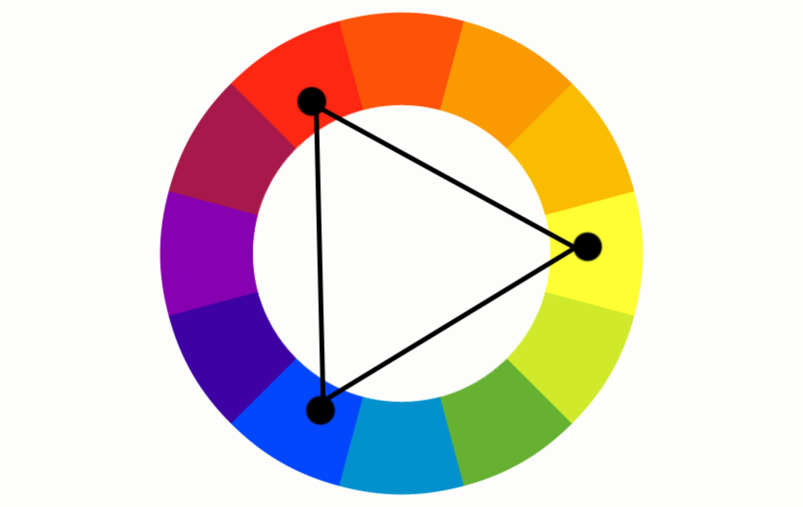
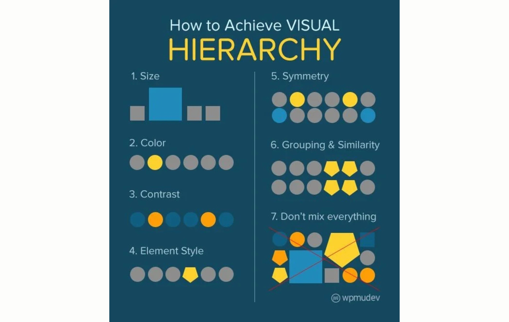
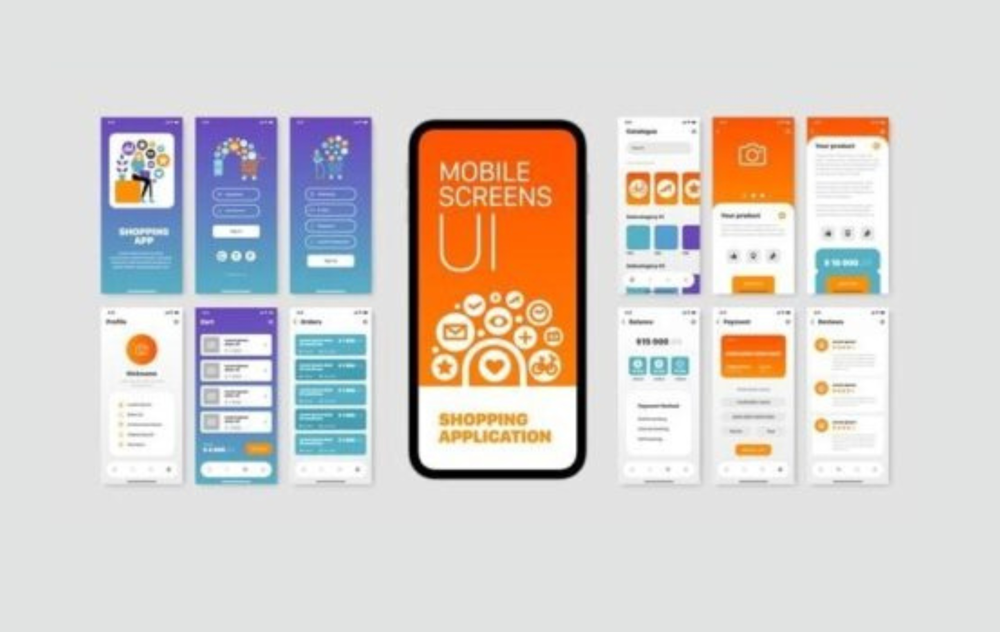
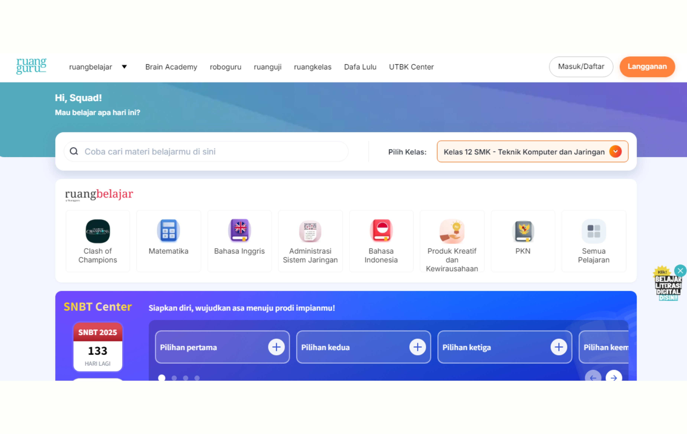

Loading...
COLOR
Materi
Peran Warna dalam Pembelajaran Berbasis Web
1. Meningkatkan perhatian dan fokus
2. Menyampaikan suasana hati
3. Memfasilitasi navigasi
Teori Psikologi Warna dalam Pembelajaran dan Media Berbasis WEB
1. Warna Biru
Warna ini sering digunakan dalam platform e-learning untuk meningkatkan fokus peserta didik
2. Warna Merah
Warna ini cocok digunakan untuk elemen-elemen penting atau pemberitahuan dalam media pembelajaran berbasis web

3. Warna Hijau
Warna ini cocok untuk materi pembelajaran yang membutuhkan refleksi atau perhatian yang mendalam

4. Hitam dan Putih
Menyediakan kontras yang tajam, memungkinkan fokus yang jelas pada teks dan elemen desain lainnya
5. Warna Kuning
Warna ini sering digunakan untuk elemen-elemen yang mengajak peserta didik untuk aktif berpartisipasi dalam pembelajaran
Teori Desain Grafis dan Warna

1. Kombinasi Warna yang Kontras

2. Keselarasan Warna (Color Harmony)

3. Penggunaan Warna untuk Hierarki Visual
Teori Kognitif dan Warna
1. Efek Visual terhadap Memori
2. Pemisahan Visual
Aksesibilitas Warna dalam Desain Web
1. Kontras yang Cukup
2. Menggunakan Simbol dan Teks sebagai Alternatif Warna
3. Tes Aksesibilitas
Teori Multimedia dan Warna
Dalam “Teori Multimedia”, Mayer (2009) menyatakan
bahwa dalam menyampaikan informasi, elemen visual,
seperti gambar dan warna, dapat memperkuat
pemahaman melalui kombinasi dengan elemen verbal
(teks dan suara).
Prinsip Penggunaan Warna dalam Pembelajaran Berbasis Web
1. Konsistensi
2. Kontras
3. Harmoni
4. Aksesibilitas
Aplikasi Warna dalam Desain Pembelajaran Berbasis Web

1. ANTARMUKA PENGGUNA (UI)

2. KONTEN PEMBELAJARAN

3. FEEDBACK DAN PEMBERITAHUAN
Tantangan dalam Penggunaan Warna
1. Kebutuhan Aksesibilitas
2. Overstimulasi Visual
Kesimpulan
Warna memiliki peran yang signifikan dalam desain media pembelajaran
berbasis web, baik dari sisi estetika, psikologi, kognisi, dan aksesibilitas.
Penggunaan warna yang tepat dapat meningkatkan perhatian, mempengaruhi
suasana hati dan motivasi peserta didik, memperjelas hierarki informasi, serta
memastikan media pembelajaran dapat diakses oleh semua pengguna,
termasuk mereka yang memiliki gangguan penglihatan. Oleh karena itu,
pemilihan dan penerapan warna dalam desain media pembelajaran berbasis
web harus dilakukan dengan cermat agar proses belajar menjadi lebih efektif,
menarik, dan inklusif.